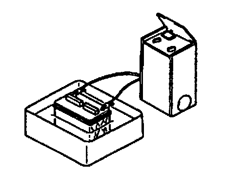
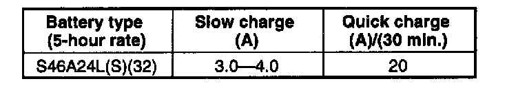

Recharging
BATTERY RECHARGINGWARNING: Hydrogen gas is produced during normal battery operation. A battery-related explosion can cause serious injury. Keep all flames (including cigarettes), heat, and sparks away from the top and surrounding area of open battery cells.
CAUTION:
- When disconnecting the battery, remove the negative cable first and install it last to present damage to electrical components or the battery.
- To preyent damage to electrical components or the battery, turn all accessories oft and stop the engine before performing maintenance or recharging the battery.
- Do not quick charge for over 30 minutes. It will damage the battery.

1. Place a battery in a pan of water to prevent it from overheating. The water level should come up about halfway on the battery. Keep water off the top of the battery.
2. Connect a battery charger to the battery.

3. Adjust the charging current as follows.
4. After the battery has been recharged, measure the battery positive voltage and verify that the battery keeps specified voltage for more than 1 hour.
Specification Above 12.4 V
5. If not as specified, replace the battery.